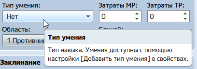

Файл помощи по RPG Maker MV
Большая часть доступных функций, что вложены в RPG Maker MV, описана в этом файле помощи.
Содержание можно найти в левой части окна, просто выберите нужный пункт.

Дополнительно, многие элементы в данной программе имеют всплывающие подсказки. Просто задержите курсор над нужным элементом и под ним появится небольшая подсказка, пользуйтесь на здоровье.
